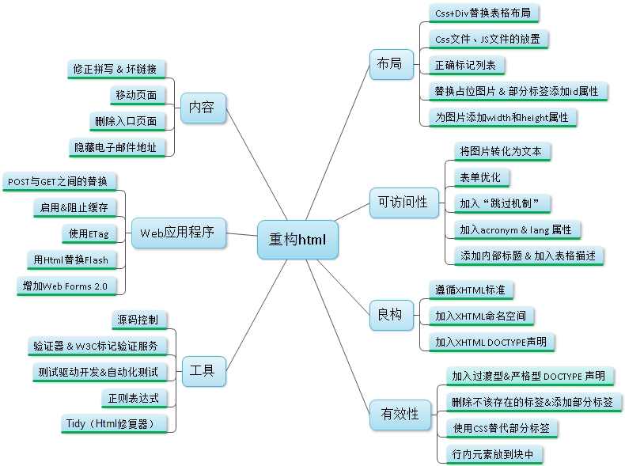

最近读了《HTML重构》这本书，以下做出自己的总结归纳，大家可以一起学习交流。
什么是重构？重构是在不改变程序行为的基础上进行小的改动是代码基本逐渐完善的过程，通常需要一些自动化工具的帮助。好的网站是需要我们对代码进行日臻完美的改善。而搜索引擎优化（seo）是网站重构的主要驱动之一，跟图片相比搜索引擎更看重文本；跟后端文本相比更看重前端文本，他们更看重标题或元标签。作者希望通过更多的文本内容取代如图片、flash等可以做好SEO。我个人觉得看完了这本书对做 SEO是非常有帮助的
百度百科对重构的定义是：重构（Refactoring）就是通过调整程序代码改善软件的质量、性能，使其程序的设计模式和架构更趋合理，提高软件的扩展性和维护性。
下面这张思维导图，是我对全书大体内容的一个概括性总结：

工具
本书推荐的工具主要包含的是自动化测试，但是我觉得现行的开发环节当中实际用到的会比较少。这里就推荐一下其他方面的优秀工具：
1. YSlow
YSlow是雅虎推出的一款浏览器插件，可以帮助你对网站的页面进行分析，并为你提供一些优化建议，以提高网站的性能。戳我查看Yslow-23条规则
2. PageSpeed
PageSpeed也是一个浏览器插件，由google推出，可以很好地对我们的Web网站进行优化实践——帮助你轻松对网站的性能瓶颈进行分析，并为你提供优化建议。
- 在线分析你的网站
- 安装浏览器插件（ Chrome、 Firefox）
- 通过 Insights API在应用中嵌入PageSpeed功能
3.其他优秀工具
- 蜘蛛模拟器：这个工具可以分析你的页面，并提供一些优化建议。
- 图像SEO工具：这个工具可以检查图片的alt标签，并提供一些优化建议。
- 请求检查器：找出页面中需要加载哪些资源和服务。
- 链接检查器：检查页面中内部、外部和无效链接。
- HTTP头检查：显示网页或资源的HTTP响应头。
- 社交检查器：检查页面中的社交组件，比如Google+、Facebook、Twitter、Linkedin和Pinterest。
- If modified检查器：检查页面是否接受 If-Modified-Since HTTP头。
- Gzip检查器：检查页面是否经过了Gzip压缩。
- CSS delivery工具：检查页面中所使用的CSS文件。
- 面包屑工具：可根据你输入的信息提供面包屑导航的代码。
- CSS压缩工具：用于压缩CSS代码。
良构
什么是良构？从技术角度来讲：它表示文档要遵循某种严格的结束比如每个起始标签都应该有一个结束标签、元素的开始与结构都在相同的父元素内以及每个实体引用都要事先定义好。虽然现在多数网站都已经采用：
<!DOCTYPE html> //dtd
采用html5<!DOCTYPE> 标签让我们在书写html标签语句的时候可以不需要那么规范，但是我觉得从文档的严谨性和规范性以及可读性上而言，遵循xml标准还是十分有必要的。所谓的良构符合标准：
1.所有的起始标签都应有一个匹配的结束标签。
2.空元素应该使用空元素的标签语法。
<br /> --> <br class=”empty” />
3.所有的属性都必须有一个值
4.所有的属性值都需要用引号括起来
5.所有的&号都必须转义为&
内嵌的JavaScript在这里会出现问题。Javascript中&是不可转义的。可以把脚本移出到一个没必要转义的外部文件中或者把脚本放进注释中。
6.所有小于号<都要转义为<
内嵌的JavaScript在这里会出现问题。Javascript不会把<当做小于号。可以把脚本移出到一个没必要转义的外部文件中或者把脚本放进注释中。
7.只有唯一的根元素
8.转义属性值中的引号
在属性值中把 ” 转义为" ，把 ’ 转义为' 。
9.所有未预定义的实体引用必须在DTD中声明
10.结束每一个实体引用，替换虚构的实体引用
XML要求实体引用以分号结尾。
11.将名称改为小写，所有元素的
12.把文本转化为UTF-8
Utf-8是一个标准的编码，可运作在所有浏览器上，被主流的文本编辑器个工具支持，支持所有Unicode字符。
内容
- 修正拼写错误，错别字
- 保证所有连接的可用性
- 移动页面（自动化检查连接）
- 重新组织URL的结构，对开发者、访问者和搜索引擎更透明，但要保证旧的URL能够继续工作
- 删除入口页面（用户体验优先）
- 隐藏电子邮件
可访问性
- 把图片转化为文本
作者说了三点
a、对于视力不好的用户可以通过感知来感知文本
b、可以加大搜索引擎的结果
c、可以提升网站性能，而且可以节省带宽成本及访问者的时间
作者还是那句话：HTML文档只有内容不应该有装饰
- 为表单输入框添加标签
对非隐藏的input,textarea,select等表单元素确保它们都有相应的标签
- 使用标准的字段名称
- 开启自动完成
- 为表单添加Tab索引
为每个表单添加Tab索引这样用户就可以通过tab键进行跳转了
<input tabindex="1" type="checkbox" />
有7个元素支持tabindex分别为：a area button input object select textarea
- 适当为较长的网页添加跳转
- 加大输入框
- 加入表格描述
- 加入lang属性
// en定义语言为英语
// zh-CN定义语言为中文
<html xmlns="http://www.w3.org/1999/xhtml" lang="en" xml:lang="en">
<html xmlns="http://www.w3.org/1999/xhtml" lang="zh-CN" xml:lang="zh-CN">
// 如果网页定义为XHTML1.1或者XML格式,那么可以使用xml:lang属性(因为xml:lang属性是在XML中确定语言信息的标准用法).
// 如果网页使用HTML格式,那么应该同时使用xml:lang和lang属性.
布局
- 使用Css+Div替换表格布局
创建现代网页需要使用与CSS相分离的XHTML不要再使用表格型布局与font标签等表现性元素（//老生常谈）
- 使用Css定位替代框架
- 正确标记列表
- 替换占位图片
- 添加id属性
Web应用程序
- POST与GET的正确使用
以下操作都应该通过POST操作
1) 定购商品
2) 签署法律文档
3) 从CMS中删除页面
4) 签署申述
5) 发送电子邮件
6) 向数据库插入新内容
7) 打印地图
8) 操控机器
以下操作都应该通过GET操作，因为这是安全的。且不必强制用户接受
1) 读取文档
2) 从CMS下载一份可编辑文档的副本
3) 读取电子邮件
4) 查看地图
5) 检查机器的当前状态
通过GET访问的URL可以链接、被爬虫抓取、收藏、预抓取，缓存。GET的形式的URL让用户可以使用后退键。总的来说，在这些情况下GET操作比POST操作对用户更友好。GET形式的URL对搜索引擎也更友好，可以提高搜索引擎排名。
- 启用 & 阻止缓存
启用缓存某些不常改变的资源（如网页icon）可以大大提高用户访问页面的速度，提升用户交互性能。
- 使用ETag
ETag：Etag是URL的Entity Tag，用于标示URL对象是否改变，区分不同语言和Session等等。具体内部含义是使服务器控制的，就像Cookie那样。
- 使用HTML替换Flash
简单的总结，希望各位能有所收获。